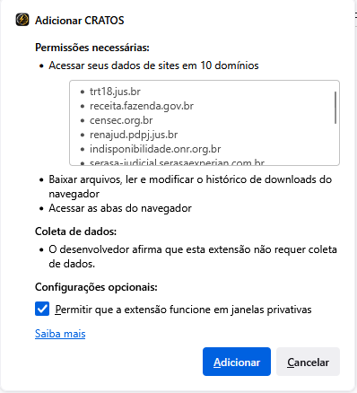
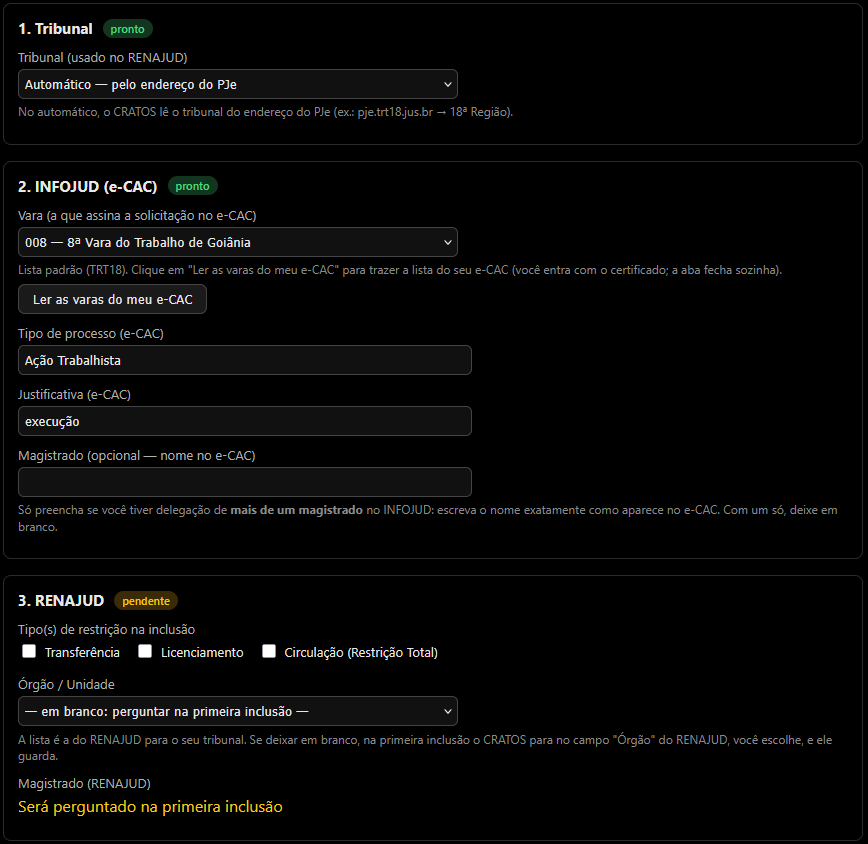
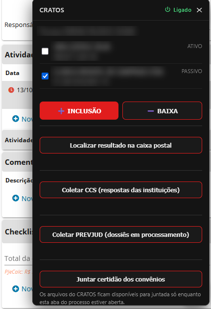
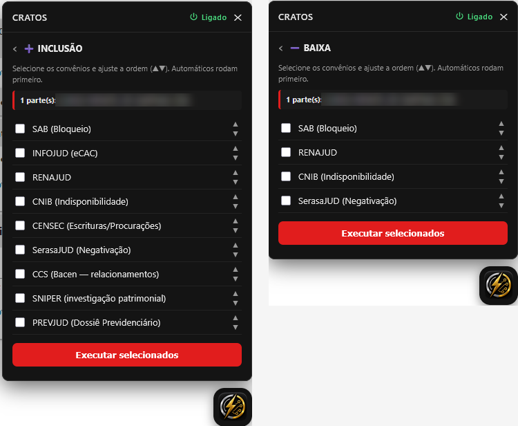
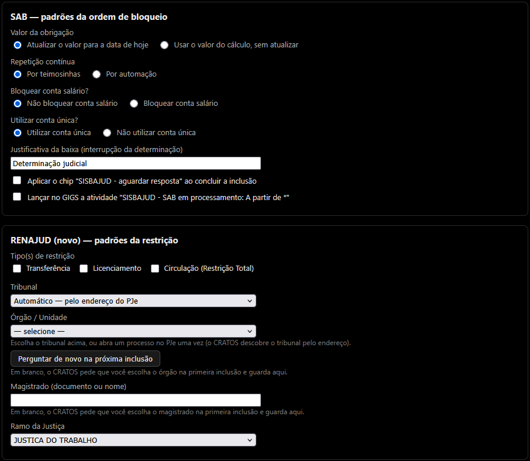

1. O que é o CRATOS
O CRATOS é uma extensão para o navegador Firefox que ajuda a executar, a partir de um processo aberto no PJe, as consultas e ordens dos convênios do dia a dia da execução — INFOJUD (e-CAC/Receita), SAB (bloqueio/SISBAJUD), RENAJUD, CNIB, CENSEC, SerasaJUD, CCS (Banco Central), SNIPER (investigação patrimonial do CNJ) e PREVJUD (Dossiê Previdenciário do INSS).
Em vez de você abrir cada sistema, digitar o número do processo e os dados das partes um por um, o CRATOS captura tudo do processo em tela e prepara cada convênio para você. Ao final, ele ainda organiza as certidões e prepara a juntada no PJe.
A ideia é simples: você conduz, o CRATOS faz o trabalho repetitivo.
2. A regra de ouro
A extensão nunca clica em Enviar, nunca Assina com o seu certificado e nunca Confirma uma ordem no seu lugar.
Em cada convênio, ela preenche os campos e PARA no ponto da decisão. O ato — o clique que produz efeito jurídico — é sempre seu.
Guarde esta regra: se algo parece que "vai sozinho até o fim", não vai. O último passo é sempre humano.
E uma segunda regra, que vale para todas as certidões: falha técnica nunca vira certidão negativa. Se um sistema não responde como esperado, a certidão diz que a consulta não pôde ser concluída e deve ser repetida — nunca que "nada foi encontrado".
3. Instalação
O CRATOS é instalado uma única vez, no Firefox 140 ou mais novo. Você recebe o arquivo cratos-X.Y.Z.xpi (a extensão já assinada pela Mozilla). Ele também fica publicado nas Releases do projeto: github.com/Rodrigo-Madalosso-Araujo/CRATOS/releases.
- Salve o arquivo .xpi no computador.
- No Firefox, abra Extensões e temas: menu do Firefox → Extensões e temas, ou o atalho Ctrl + Shift + A.
- Clique na engrenagem e escolha Instalar de um arquivo…
- Selecione o arquivo e clique em Abrir.
- Na janela "Adicionar CRATOS?", clique em Adicionar. A página Primeiros passos abre sozinha (capítulo 4).
Arrastar o arquivo .xpi para dentro da janela do Firefox também instala: vá direto ao passo 5.

Use sempre o arquivo assinado que você recebeu. O Firefox recusa o pacote sem assinatura.
Depois da primeira instalação, você não precisa instalar de novo: as versões novas do CRATOS chegam sozinhas pelo próprio Firefox, que consulta cerca de uma vez por dia a lista de versões publicada pelo responsável pela extensão.
Depois de cada atualização, o painel mostra uma vez o cartão "Novidades", com o que mudou (veja 5.11).
4. Primeiros passos
Logo depois da primeira instalação, o CRATOS abre sozinho a página "Primeiros passos": uma lista com o essencial para os convênios funcionarem. Cada item mostra se está pronto, pendente ou é opcional. Você pode parar no meio e voltar depois pelo botão "Abrir os Primeiros passos", no topo das Preferências. Nenhum sistema é aberto sem o seu clique.

4.1. O que configurar
- Tribunal. Deixe em "Automático": o CRATOS lê o tribunal do endereço do PJe (por exemplo, pje.trt18.jus.br é a 18ª Região).
- INFOJUD — vara. Clique em "Ler as varas do meu e-CAC". O e-CAC abre; entre com o seu certificado, se pedir. O CRATOS lê o menu de varas da própria tela, avisa e fecha a aba sozinho. Depois, escolha a sua vara na lista.
- INFOJUD — tipo de processo e justificativa. Os padrões ("Ação Trabalhista" e "execução") servem para a maioria; ajuste se a sua unidade usa outro texto.
- INFOJUD — magistrado. Só preencha se você tiver delegação de mais de um magistrado no INFOJUD: aí escreva o nome exatamente como aparece no e-CAC. Com um só, deixe em branco.
- RENAJUD. Marque o(s) tipo(s) de restrição e escolha o seu órgão na lista, que já é a do seu tribunal. O magistrado não precisa ser escolhido agora: na primeira inclusão, o CRATOS para no campo do RENAJUD, você escolhe, e ele guarda para as próximas (o mesmo vale para o órgão, se ficar em branco).
- CNIB (opcional). Vara esperada: em branco, o CRATOS só informa em que vara o CNIB está logado; preenchida, ele para se o CNIB estiver em outra.
- Downloads. A subpasta (padrão CRATOS) vale para todos os convênios.
- Juntada. Escolha se o CRATOS cria a minuta da certidão ao terminar a fila e para quais polos libera a visibilidade.
Clique em "Salvar". Os itens passam a "pronto". Os demais ajustes ficam nas Preferências (capítulo 6).
Se a vara do e-CAC não estiver configurada, o painel avisa na linha do INFOJUD, com um link para os Primeiros passos.
O botão Manual do usuário, nos Primeiros passos e nas Preferências, abre este manual numa aba do Firefox — sem internet e sempre na versão instalada. Nas Preferências, o ? ao lado de cada convênio abre o manual direto na seção dele.
4.2. O uso de todo dia
Depois de configurado, o uso é sempre o mesmo:
- Abra o processo no PJe, na tela de detalhes.
- Clique no botão flutuante do CRATOS. Um painel abre no canto da tela. (Você pode arrastar o botão para onde preferir; a posição fica guardada.)
- O CRATOS captura as partes do processo e mostra a lista.

5. Usando no dia a dia
5.1. Escolher as partes
No painel, cada parte do processo aparece com uma caixinha de seleção. As partes do polo passivo (os executados) já vêm marcadas — são o alvo natural das pesquisas. O polo ativo vem desmarcado, para você não pesquisar o credor por engano. Marque ou desmarque como precisar.
5.2. Inclusão ou Baixa
Escolha o que vai fazer: INCLUSÃO (incluir restrições/ordens e fazer consultas) ou BAIXA (retirar restrições). O CRATOS mostra os convênios adequados a cada caso. As consultas — INFOJUD, CENSEC, CCS, SNIPER e PREVJUD — aparecem na INCLUSÃO; SAB, RENAJUD, CNIB e SerasaJUD aparecem nas duas.
5.3. Escolher os convênios e a ordem
Marque os convênios que quer executar. Você pode ajustar a ordem com as setinhas (▲▼). Depois, clique em Executar selecionados.

5.4. A fila que anda sozinha
A partir daí, o CRATOS executa um convênio de cada vez. Quando um termina — o que ele reconhece pela chegada da certidão — a extensão passa para o próximo automaticamente e fecha a aba do convênio concluído. Você acompanha o progresso pelo painel.
✓ Concluí — próximo: use quando você terminou aquele convênio no sistema e quer seguir para o próximo.
⏭ Pular — próximo da fila: use quando quiser deixar aquele convênio para depois. A fila segue, e o convênio pulado aparece sinalizado no relatório final.
Quando um convênio dá erro, o terceiro botão devolve o convênio ao fim da fila: os outros seguem e ele roda de novo depois (se já for o último, roda na hora). Vale uma vez por convênio em cada execução.
Nas consultas (INFOJUD, CENSEC, CCS, SNIPER, PREVJUD), o Refazer está sempre disponível. Se o pedido já tinha sido registrado (ex.: a investigação já foi iniciada no SNIPER), o painel avisa que refazer registra outro pedido.
Nos atos (SAB, RENAJUD, CNIB, SerasaJUD), o Refazer fica bloqueado a partir do momento em que a ordem pode ter chegado ao sistema — quando o CRATOS a enviou ou a deixou pronta para a sua confirmação. Assim não sai ordem em dobro. Confira no sistema; se nada chegou, use Pular e rode o convênio de novo depois.
Os arquivos da tentativa que falhou ficam fora da certidão de juntada (não vão em duplicidade), e o relatório do fim mostra as duas tentativas.
Em alguns convênios (INFOJUD, SNIPER, PREVJUD), enquanto o CRATOS trabalha, a aba do sistema fica coberta por um aviso. Não clique nela até ele terminar.
5.5. O relatório do fim
Quando a fila termina, o painel mostra um resumo: quantos convênios foram concluídos e quais precisam da sua atenção (por exemplo, um que você pulou, que voltou incompleto ou cujo sistema estava fora do ar). Esse resumo é a sua conferência rápida — vale sempre ler.
5.6. Buscar as respostas do INFOJUD
O INFOJUD não responde na hora: o pedido é registrado e a resposta chega na caixa postal do e-CAC minutos ou horas depois. Ao final da fila, o CRATOS já verifica e baixa as respostas disponíveis. Se ainda não chegaram, é normal — use o botão "Coletar INFOJUD (resultados na caixa postal)" mais tarde para buscar.
Junto com o INFOJUD, se a opção estiver ligada (veja 6.1), o CRATOS pesquisa antes das solicitações as empresas em que cada executado pessoa física é o responsável ("Recuperar NI – CNPJ") e gera uma certidão consolidada, com o endereço de cada empresa. A pesquisa é feita por trás, com a sua sessão do e-CAC: a tela fica coberta por um aviso enquanto ela roda, e no fim a faixa mostra um resumo (por exemplo, "F.S.: 3 empresas; B.P.: nenhuma").
Se só o Recuperar NI estiver marcado (nenhum tipo de declaração ligado), o CRATOS faz apenas essa pesquisa: não abre a tela de solicitação nem consulta a caixa postal, porque a resposta é imediata.
5.7. Coletas posteriores: CCS e PREVJUD
Dois convênios também respondem depois, e cada um tem o seu botão na tela inicial do painel:
- Coletar CCS (respostas das instituições): no dia seguinte à requisição, junta o PDF de detalhamentos do próprio CCS e uma certidão com quem já respondeu e quem ainda falta responder.
- Coletar PREVJUD (dossiês em processamento): busca os dossiês prontos do processo (pedidos dos últimos 7 dias) e junta os PDFs do INSS, mesmo que já tenham sido juntados antes.
5.8. Sistema fora do ar: certidão de indisponibilidade
Na tela inicial do painel, escolha um convênio e clique em "Verificar disponibilidade do convênio". O CRATOS faz até 3 tentativas, testa o próprio PJe como controle e mostra o resultado. Se o sistema estiver mesmo fora do ar, aparece o botão para gerar a certidão de indisponibilidade — só com a sua confirmação.
Durante a fila, se um convênio falha ou fica sem resposta, o CRATOS faz essa verificação sozinho e, se for o caso, oferece a certidão.
A certidão relata as tentativas, com hora e retorno, sem afirmar a causa, e diz que a diligência deve ser repetida. Se nem o PJe responder, o problema pode ser a rede da unidade, e o CRATOS não oferece certidão.
5.9. Juntar a certidão no processo
Ao terminar os convênios, o CRATOS reúne o que foi feito em uma certidão e anexa os comprovantes, criando a minuta no processo. Ele cria a minuta e PARA: conferir, ajustar e assinar é você. Se preferir, use o botão "Juntar certidão dos convênios" para fazer isso quando quiser.
Inclusões e consultas saem numa certidão; cancelamentos de restrição, em outra; sistemas indisponíveis, numa terceira. Na baixa, quando o convênio não encontra restrição ativa para cancelar (CNIB e RENAJUD), também sai certidão, dizendo isso.
Ao criar a certidão, o CRATOS também libera a visibilidade do documento para as partes do processo (você escolhe quais polos nas Preferências — veja 6.10).
Depois que a minuta é criada, confira e assine você mesmo. Na tela de juntada não existe a pergunta de confirmação que os outros convênios têm — se você já assinou algo na sessão, o clique em Assinar assina direto.
5.10. Junte antes de fechar a aba do processo
Por privacidade, os dados de cada processo ficam guardados só enquanto a aba dele estiver aberta. Ao fechar a aba, o CRATOS apaga tudo o que guardou daquele processo — inclusive a lista de arquivos para a juntada. O que sobrar é apagado quando o Firefox abre.
Faça a juntada antes de fechar a aba do processo. Se houver arquivo do CRATOS ainda não juntado, o Firefox pergunta se você quer mesmo sair da página.
Se fechar sem juntar, os arquivos continuam na sua pasta de downloads, mas o CRATOS não os oferece mais para juntada: anexe à mão ou refaça o convênio.
5.11. Novidades da versão
Depois de cada atualização, o painel mostra uma vez o cartão "Novidades", com o que mudou. Clique em "Entendi" para fechar; "ver versões anteriores" mostra o histórico. O mesmo histórico está nas Preferências, no botão "Ver novidades das versões" (veja 6.11).
6. As configurações (Preferências)
As Preferências definem os padrões de cada convênio — como o que consultar, quais restrições aplicar e de onde vem o valor. Você ajusta uma vez e o CRATOS passa a usar esses padrões em todos os processos. Para abrir: clique com o botão direito no ícone do CRATOS e escolha Preferências (ou em Extensões e temas, no CRATOS, aba Preferências).

Exportar e importar. Ao lado de "Salvar configurações", o botão Exportar configurações salva um arquivo .json com as suas Preferências (você escolhe onde) — serve de backup, para levar a outro computador ou para passar o padrão da unidade aos colegas. O arquivo leva só as opções de configuração: nenhum dado de processo ou de parte. Importar configurações lê um arquivo desses e mostra, antes de aplicar, o que vai mudar; nada é gravado sem o seu "Aplicar". Se o arquivo traz outra lotação (vara do e-CAC, tribunal, órgão e magistrado do RENAJUD, órgão da CNIB), a opção "Manter os dados da minha lotação" já vem marcada.
Só entram as opções que o CRATOS conhece, com os valores previstos (as mesmas opções desta tela), textos de até 200 caracteres e sem marcação (<, >, aspas…), e pastas simples (sem "../"). O que fugir disso é descartado e listado.
Arquivo grande demais, que não seja do CRATOS ou que tenha sido mexido fora dele é recusado inteiro — e nada muda.
6.1. INFOJUD (e-CAC / Receita)
Escolha quais documentos consultar — separadamente para pessoas físicas (CPF) e jurídicas (CNPJ). Onde houver "últimos anos", você define quantos anos para trás a consulta abrange.
| Opção | O que faz | Padrão |
|---|---|---|
| Consultas para CPF | DIRPF, DITR, DOI, DECRED, DIMOB, Informações Cadastrais e eFinanceira. Marque os que quer; ajuste os anos onde couber. | DIRPF 2a; DITR, DECRED, DIMOB 1a; DOI |
| Consultas para CNPJ | DIPJ, ECF, DITR, DOI, DECRED, DIMOB, CPMF, Informações Cadastrais e eFinanceira. | DITR, DECRED, DIMOB 1a; DOI |
| Opções do eFinanceira | Tipo de conta, tipo de relação, exibir câmbio e tipo de extrato — separadas para CPF e CNPJ. O padrão é o relatório detalhado: Todas, Todas, Sim, Contas e movimentações. | Detalhado |
| Recuperar NI (no quadro CPF) | Antes das solicitações, pesquisa as empresas em que cada executado pessoa física é o responsável e expede uma certidão consolidada, com o endereço de cada empresa. | Ligado |
| Vara | A vara que assina a solicitação no e-CAC. O botão "Ler as varas do meu e-CAC" traz a lista do seu próprio e-CAC; depois é só escolher. | — |
| Tipo de processo | Como o e-CAC classifica o pedido. | Ação Trabalhista |
| Justificativa | Texto da justificativa no e-CAC. | execução |
| Magistrado | Só para quem tem delegação de mais de um magistrado no INFOJUD: o nome exatamente como aparece no e-CAC. Com um só, deixe em branco. | — |
| Ao terminar a fila | Se o CRATOS verifica e colhe sozinho as respostas na caixa postal, só verifica e oferece o botão de colher, ou não verifica. | Verificar e colher |
| Pasta de download | Subpasta onde os arquivos são salvos, dentro da pasta de downloads do Firefox. | CRATOS |
A eFinanceira é assíncrona: a resposta pode demorar. Isso é do sistema, não da extensão.
Recuperar NI: se o INFOJUD avisar que há mais de 50 empresas, o CRATOS refaz a pesquisa por UF (27 pesquisas, cerca de um minuto). Se a consulta falhar, a certidão diz que não pôde ser concluída e deve ser repetida — nunca que não há empresas.
O INFOJUD funciona dentro do e-CAC, que a Receita vem migrando para um novo portal. Enquanto a consulta judicial não existir no portal novo, o e-CAC atual continua no ar. Vale acompanhar esse prazo.
6.2. SAB (bloqueio / SISBAJUD)
| Opção | O que faz | Padrão |
|---|---|---|
| Valor da obrigação | Atualizar o valor para a data de hoje, ou usar o valor do cálculo sem atualizar. | Atualizar p/ hoje |
| Repetição contínua | Por teimosinhas ou por automação. | Teimosinhas |
| Bloquear conta salário? | Se inclui a conta salário no bloqueio. | Não |
| Utilizar conta única? | Se usa a conta única. | Sim |
| Justificativa da baixa | Texto usado ao interromper a determinação. | Determinação judicial |
| Chip ao concluir | Aplica o marcador "SISBAJUD - aguardar resposta" ao concluir a inclusão. | Desligado |
| Atividade no GIGS | Lança a atividade "SISBAJUD - SAB em processamento" no GIGS. | Desligado |
Quando você escolhe atualizar o valor para hoje, o CRATOS usa o mesmo fator do PJe-Calc e mostra um aviso de que o valor foi atualizado. Confira sempre o valor antes de confirmar.
6.3. RENAJUD
| Opção | O que faz | Padrão |
|---|---|---|
| Tipo(s) de restrição | Transferência, Licenciamento e/ou Circulação (Restrição Total). Marque um ou mais. | nenhuma |
| Tribunal | O tribunal que aparece nos Dados do Processo. No automático, vem do endereço do PJe. | Automático |
| Órgão / Unidade | A sua unidade, na lista do RENAJUD para o seu tribunal (ela se atualiza a cada inclusão). Em branco, o CRATOS pergunta na primeira inclusão e guarda. O botão "Perguntar de novo na próxima inclusão" serve para quem mudou de lotação. | — |
| Magistrado | Documento ou nome do magistrado. Em branco, o CRATOS pergunta na primeira inclusão e guarda. | — |
| Ramo da Justiça | O ramo que aparece nos Dados do Processo. | Justiça do Trabalho |
Na baixa, se o RENAJUD não encontrar restrição ativa para cancelar, o CRATOS gera certidão dizendo isso.
6.4. CNIB (indisponibilidade)
| Opção | O que faz | Padrão |
|---|---|---|
| Vara esperada | Se preenchida, o CRATOS bloqueia caso o CNIB esteja logado em outra vara. Em branco, apenas informa. | em branco |
| Informar o valor da dívida? | Se inclui o valor na ordem. | Não |
| De onde vem o valor | Do PJe-Calc (último cálculo) ou um valor fixo. | PJe-Calc |
| Valor fixo | Usado se você escolher valor fixo. | — |
| Nome do Processo | Como a tela 1 do CNIB classifica o processo. | Execução judicial |
| Priorizar prenotação? | Na Justiça do Trabalho não se usa. | Não |
Inclusão e cancelamento TOTAL: o CRATOS prepara e para no envio/assinatura, que são seus.
Cancelamento PARCIAL é feito 100% à mão, fora da extensão: escolher quais matrículas saem é decisão jurídica caso a caso.
No cancelamento, se não houver ordem ativa a cancelar (não localizada ou já cancelada), o CRATOS gera certidão dizendo isso.
6.5. CENSEC (Escrituras e Procurações)
| Opção | O que faz | Padrão |
|---|---|---|
| Gerar certidão negativa? | Se cria a certidão também quando não há atos (negativa). | Sim |
| Listar as partes de cada ato | Inclui na certidão as partes de cada ato (nome, CPF/CNPJ e qualidade). | Desligado |
| Pasta de download | Subpasta onde os arquivos são salvos. | CRATOS |
O login é seu (certificado digital + token por e-mail). O CRATOS abre a aba, espera você entrar e retoma sozinho.
Consulta as partes que você marcou, de qualquer polo (é consulta, não constrição). Uma certidão por parte, inclusive a negativa.
Se o site pedir um captcha, o CRATOS congela e espera você resolver — não tenta contornar.
6.6. SerasaJUD (negativação)
| Opção | O que faz | Padrão |
|---|---|---|
| Prazo de atendimento | 5, 3, 2 ou 1 dia. O padrão do próprio SerasaJUD é 5 dias. | 5 dias |
| De onde vem o valor | Do PJe-Calc (último cálculo) ou um valor fixo. | PJe-Calc |
| Valor fixo | Usado se você escolher valor fixo. | — |
| Gerar certidão depois de confirmar? | Se emite a certidão após você confirmar a ordem. | Sim |
| Pasta de download | Subpasta onde os arquivos são salvos. | CRATOS |
Uma ordem por processo, com todos os executados como titulares. Se algum não entrar, o CRATOS para e avisa.
Negativar é constrição: se você marcar uma parte do polo ativo, ela entra (a marcação é sua), mas com aviso em vermelho na tela.
Se o processo não tiver cálculo do PJe-Calc, o CRATOS abre uma janela e espera, sem prazo, você informar o valor (e, na baixa, a data da dívida) à mão. A certidão registra que o dado foi informado por você.
6.7. CCS (Banco Central)
| Opção | O que faz | Padrão |
|---|---|---|
| Aceitar o Termo de Uso | Se o CRATOS aceita o termo por você ou para para você aceitar. | Não (para) |
| Enviar o detalhamento | Se marca os relacionamentos e envia sozinho (só se a marcação sair limpa) ou marca e para para você clicar. | Não (para) |
| Quais relacionamentos detalhar | Todos os detalháveis ou só os ativos (sem Data Fim). | Todos |
| Esconder inativos | Só muda a exibição na tela, não a marcação. | Não |
| Chip "CCS - aguardar resposta" | Aplica o chip no processo depois que o detalhamento é enviado. A etiqueta precisa existir na vara. | Ligado |
| Motivo da consulta | Texto do motivo (o número do processo já vai no campo próprio). | Execução trabalhista |
| Pasta de download | Subpasta onde os arquivos são salvos. | CRATOS |
O login é seu (ADFS do Banco Central). Uma requisição por processo, com todos os executados.
No dia seguinte, use "Coletar CCS" no painel (veja 5.7). Só o PDF do próprio CCS é juntado, e os anexos entram sigilosos.
6.8. SNIPER (investigação patrimonial)
| Opção | O que faz | Padrão |
|---|---|---|
| Fontes | Sisbajud (contas), Renajud (veículos), SERP/ONR (imóveis), AnacJud (aeronaves), Tribunal Marítimo (embarcações), TSE (bens declarados), SNGB (bens apreendidos) e CGU (sanções). Marque as que quer consultar. | Todas |
| Pasta de download | Subpasta onde os arquivos são salvos. | CRATOS |
| Opção | O que faz | Padrão |
|---|---|---|
| Juntar os processos em nome das partes | Inclui no relatório os processos de cada parte (DataJud, aba Processos do "Mais detalhes"). Desligado, o CRATOS nem abre a aba, e o relatório e a certidão dizem que não foram incluídos por configuração. | Ligado |
| Juntar o grafo de vínculos | Inclui o grafo redesenhado e a ficha de cada terceiro vinculado. Desligado, o CRATOS nem abre a aba Grafo, e o relatório e a certidão dizem que não foi incluído por configuração. | Ligado |
O cadastro da Receita de cada parte entra sempre: é o que identifica as pessoas investigadas.
O login é seu (PDPJ). O CRATOS só faz investigação: nunca clica em bloqueio, restrição ou outra constrição.
Saem o relatório (com o cadastro da Receita e os processos de cada parte) e a certidão, fonte por fonte. Erro de uma fonte nunca vira "nada encontrado". Os anexos entram sigilosos.
Relatório desenhado. O relatório do SNIPER sai no padrão visual do CRATOS: faixas azuis por seção, tabelas com linhas realçadas, um selo por fonte (com resultado, nenhum registro, erro da fonte, em andamento) e o rodapé com "página X de Y". A certidão continua em texto corrido, como as dos demais convênios.
Grafo de vínculos. No fim do relatório, cada grafo da aba "Grafo" do SNIPER aparece redesenhado numa página própria, com a legenda do próprio SNIPER (entidade, indivíduo, candidatura; tom escuro = todas as relações já expandidas), e cada terceiro vinculado ganha uma ficha com os "Detalhes do objeto" e as relações, com a data de entrada na sociedade. Vínculos que o SNIPER não expandiu (os marcados com * na impressão dele) não entram. Se o grafo não carregar, o relatório e a certidão dizem que ele não pôde ser obtido e indicam o nº da investigação — nunca "sem vínculos".
6.9. PREVJUD (Dossiê Previdenciário)
| Opção | O que faz | Padrão |
|---|---|---|
| Documentos a juntar | Declaração de Benefícios, Carta de Concessão, Dados Cadastrais, Quadro Resumo, Extrato CNIS, Histórico de Créditos e outros que o PREVJUD passar a oferecer. Ligue ou desligue cada um. | Todos |
| Pasta de download | Subpasta onde os arquivos são salvos. | CRATOS |
O login é seu (jus.br). Só o Dossiê Previdenciário, para executados pessoa física; o CRATOS nunca abre o Dossiê Médico.
O CRATOS espera até 15 minutos. O que não ficar pronto vai na certidão como "em processamento" e é buscado depois por "Coletar PREVJUD" (veja 5.7). Os anexos entram sigilosos.
6.10. Juntada da certidão
| Opção | O que faz | Padrão |
|---|---|---|
| Ao terminar os convênios | Criar a minuta da certidão automaticamente, ou deixar para você criar pelo botão do painel. | Criar |
| Dar visibilidade às partes | Liberar a certidão para o polo ativo e/ou o polo passivo. Marcando os dois, todas as partes enxergam. | Ambos |
6.11. Novidades da versão e Sobre
| Opção | O que faz | Padrão |
|---|---|---|
| Mostrar novidades | Mostra no painel o cartão de novidades depois de cada atualização. | Ligado |
No fim das Preferências fica o cartão "Sobre o CRATOS", com a versão instalada, o que a extensão faz com os seus dados, o botão "Ver novidades das versões" e o botão Procurar atualização: ele confere na hora a lista de versões no GitHub e, se houver versão nova, oferece "Instalar agora" (o Firefox pergunta e atualiza por cima, sem perder as Preferências; use quando não houver convênio rodando).
7. Observações importantes
- O CRATOS não assina nada. Confirmar, enviar e assinar é sempre seu — em todos os convênios e na juntada.
- Confira antes de confirmar. Valores, partes e restrições preenchidos pelo CRATOS devem ser conferidos na tela antes do seu clique.
- Login nos sistemas é seu. Certificado digital e tokens são inseridos por você; o CRATOS espera e retoma. Ele nunca lê nem guarda senha, token ou certificado.
- Leia o relatório do fim da fila. É onde aparece o que precisa da sua atenção — um convênio pulado ou incompleto.
- Falha técnica nunca vira certidão negativa. Se um sistema não responder como esperado, a certidão diz que a consulta não pôde ser concluída e deve ser repetida.
- Os arquivos ficam na sua pasta de downloads, na subpasta CRATOS (ou a que você configurar).
- Junte antes de fechar a aba do processo. Ao fechar a aba, os dados daquele processo são apagados do navegador (veja 5.10).
- Dados de processo não saem da sua máquina. O CRATOS não tem servidor próprio nem telemetria — ele só opera os sistemas oficiais, com o seu login. A única consulta externa é à lista de versões do CRATOS (a do Firefox, uma vez por dia, e a do botão "Procurar atualização"), e nela não vai nenhum dado de processo.
7.1. Quando algo para: a faixa e o relatório do problema
Quando um convênio não pode seguir, o CRATOS para e mostra uma faixa vermelha que começa com PAREI:, com o motivo em português claro e a informação se algo já tinha sido enviado (por exemplo, "Nada foi enviado. Confira a tela e execute de novo."). Muitas vezes, basta seguir a instrução da faixa.
Na própria faixa há o botão Gerar relatório do problema. Ele monta, no seu navegador, um arquivo com o que aconteceu: a versão do CRATOS, o convênio, os últimos passos e o estado da operação. Nada é enviado a lugar nenhum: você confere o conteúdo e manda ao responsável (veja o Contato, no fim). Gere o relatório logo depois da falha — é nesse momento que o estado da operação ainda está gravado.
O relatório traz o número do processo e os dados das partes, sem máscara — é o que permite reproduzir o erro. Mande-o só pelos canais institucionais do tribunal.
8. Perguntas frequentes
Instalei e o botão do CRATOS não aparece.
Abra um processo no PJe, na tela de detalhes — o botão flutuante do CRATOS aparece nesse contexto. Se mesmo assim não surgir, confirme em Extensões e temas se a extensão está ativada.
O Firefox não deixa instalar o arquivo.
Use o arquivo .xpi assinado que você recebeu (ou o da página de Releases). O Firefox recusa pacotes sem assinatura.
Um convênio não avançou sozinho.
Alguns exigem uma ação sua (login, confirmação, assinatura). Conclua no sistema e clique em "Concluí — próximo", ou use "Pular" para seguir e voltar depois.
A resposta do INFOJUD não veio.
É normal: o INFOJUD responde depois, na caixa postal. Tente de novo mais tarde pelo botão "Coletar INFOJUD (resultados na caixa postal)".
O CCS ou o PREVJUD não respondeu na hora.
Também é normal. Use "Coletar CCS" no dia seguinte, ou "Coletar PREVJUD" mais tarde (veja 5.7).
O CCS voltou em branco.
Pode ser instabilidade do Banco Central ou um cookie de sessão antiga. Abra o CCS à mão (www3.bcb.gov.br/ccs): se vier em branco também, é o Banco Central — tente mais tarde. Se abrir normal, limpe os cookies do site (cadeado da barra de endereço → "Limpar cookies e dados do site") e mande o CCS de novo pelo CRATOS. Nesse caso nada é certificado.
Fechei a aba do processo e a juntada não oferece mais as certidões.
Ao fechar a aba, o CRATOS apaga os dados daquele processo. Os arquivos continuam na sua pasta de downloads: anexe à mão ou refaça o convênio (veja 5.10).
O sistema do convênio estava fora do ar.
Use "Verificar disponibilidade do convênio" no painel. Se a indisponibilidade se confirmar, você pode gerar a certidão (veja 5.8).
Como recebo as versões novas?
Sozinho: o Firefox atualiza o CRATOS automaticamente, cerca de uma vez por dia. Para buscar na hora, use "Procurar atualização" no cartão "Sobre" das Preferências. Depois de cada atualização, o painel mostra o que mudou.
A certidão da juntada saiu com um documento a menos.
Atualize para a versão mais recente do CRATOS. Se persistir, gere o relatório do problema, se houver faixa vermelha, e avise o responsável (veja o Contato).
Posso confiar que ele não vai enviar/assinar por engano?
Sim. Por decisão de projeto, o CRATOS nunca clica em Enviar, Confirmar ou Assinar. Ele para antes do ato.
Contato
Dúvidas, sugestões e relatórios de problema: Rodrigo Madalosso Araujo — SGJ · ramal 5863 · rodrigo.araujo@trt18.jus.br.
CRATOS 1.9.3 · Rodrigo Madalosso Araujo — SGJ · ramal 5863 · rodrigo.araujo@trt18.jus.br